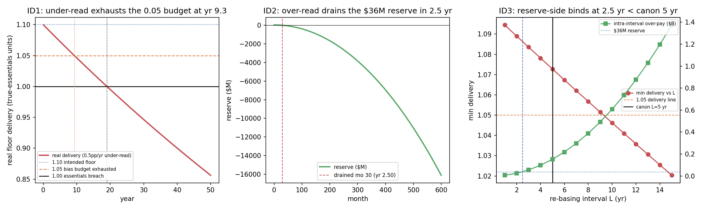

In plain language
July 11, 2026. Companion to RESULTS - v33.0 Index Drift.
The thing being tested
EDEN's safety net promises everyone the price of a basket of essentials — food, shelter, energy, water, connectivity, basic healthcare, transit. To pay that promise you first have to measure what essentials cost. That measurement is the EBI — think of it as the ruler the whole floor is denominated in. The floor doesn't pay exactly the measured price; it pays 110% of it. The extra 10% is a deliberate cushion, and the design says half of it (5%) is set aside specifically to absorb measurement error — the "bias budget." This test asks a simple, uncomfortable question: what if the ruler is quietly, consistently wrong — off by half a percent a year, every year, for fifty years? Does that 5% cushion hold?
Why this matters
No price index is perfect, and the dangerous kind of error isn't a random wobble — it's a steady lean in one direction (real-world price indices are famously accused of exactly this). A half-percent a year sounds tiny. The question is whether "tiny but relentless" adds up to something that breaks the promise, and how long the design has before it has to correct course. The design's stated answer is "re-measure the whole basket from scratch every 5 years." We priced whether that's fast enough.
What we found
Half a percent a year is not tiny — it eats the whole 5% cushion in about ten years. If the ruler steadily under-reads (says essentials are cheaper than they are), the floor slowly underpays. The 5% measurement cushion is completely used up in about 9–10 years, and it keeps sliding: people still get bare essentials for about 19 years, but by year 50 the floor delivers only about 86% of what it promised — a 14% gap. A steady lean, left uncorrected, wins.
The two directions fail in completely different ways, on completely different clocks — that's the real discovery. If the ruler over-reads instead (says essentials cost more than they do), people are fine — they get over-paid. But someone is footing that over-payment, and it comes out of a $36M emergency reserve. That reserve is small next to the floor's monthly bill, so a steady over-read drains it in about 2.5 years (and the running total of over-payments reaches $16 billion by year 50). So: an under-read slowly starves the people over a decade-plus; an over-read quickly bankrupts the funder in a couple of years.
The practical upshot: the 5-year re-basing rule is too slow — but only on one side. Re-measuring the basket every 5 years easily protects delivery (the under-read side has ~10 years of runway). But it does not protect the reserve (the over-read side runs out in ~2.5 years, well before the 5-year fix arrives). So the honest recommendation to the design: the binding deadline is ~2.5 years, set by the funding side, not the 5 years the spec assumed — either re-measure that often, or (cheaper) add an alarm that watches the running total drained from the reserve rather than the instantaneous error rate, or fund the over-payment from ongoing income instead of a fixed pot.
One honest wrinkle we're flagging
We also checked that this is really about a steady lean, not ordinary random noise — and it is: pure month-to-month jitter (with no steady lean) never exhausts the cushion, even over 50 years, on both random seeds we ran. That's the reassuring half. The unreassuring half: one of our own internal precision checks was set too strictly and failed — when we added random noise on top of the steady lean, the exact month the cushion "runs out" bounced around by about a year between random seeds. We left the failed check on the record rather than loosening it after the fact (house rule), and the lesson is worth keeping: the trustworthy number is the steady-lean one (about year 10); don't trust any single noisy run to name the exact month.
One line
A price ruler that leans just half a percent a year eats EDEN's entire 5% measurement cushion in about a decade — and the two directions break differently: a steady under-read slowly shortchanges people (14% short by year 50), while a steady over-read quickly bankrupts the reserve (gone in 2.5 years), so the real deadline for re-checking the ruler is about 2½ years, not the 5 the design assumed.
This is a robustness test under stated assumptions, not a prediction that the ruler will drift — it prices what the design's own 5% "measurement-bias budget" can and cannot absorb, so the re-checking schedule can be set with eyes open. Numbers trace to results_v33.json; the technical companion is RESULTS - v33.0 Index Drift.
Figures

Technical results
Run: July 11, 2026. Spec: v33 SPEC - Index Drift (registered).md — bars ID0–ID4 fixed before code (filesystem mtimes: SPEC 20:57 < engine 20:59, same session). Engine: index_drift_sim.py (deterministic; seeds 7/11 used only in ID4's noise overlay). Committed: results_v33.json, fig_v33_index_drift.png. Discharges Backlog #12 [OPUS] and the EBI Methodology §5 named candidate — prices the 0.05 measurement-bias budget. Every number below traces to results_v33.json.
Verdict in one line: the 0.05 bias budget does exactly what §5 promises for about a decade — then a systematic, one-directional ±0.5pp/yr drift exhausts it, and the finding is a sharp asymmetry in when: an under-read erodes delivery slowly (budget gone at yr 9.3, bare essentials still covered to yr 19, 14.4% short by yr 50), while an over-read drains the finite $36M reserve fast (gone in 2.5 yr; $16.2B over-paid by yr 50) — so because the two ±5% sides fail on wildly different clocks, the binding constraint on re-basing cadence is the reserve/over-read side (~2.5 yr), NOT the delivery side (~10 yr), and canon's 5-year re-basing therefore protects delivery but leaves the reserve exposed. The model is deterministic (two runs byte-identical); honest zero-mean noise is absorbed for the full 50 years — it is systematic bias, not noise, that spends the budget.
Bar summary (one pass; ID1–ID3 FAIL exactly as registered — the findings; ID4 fails one clause honestly)
| Bar | Registered pass condition | Measured (from JSON) | Result |
|---|---|---|---|
| ID0 harness / sanity (zero drift) | delivery = 1.10 every mo; over-pay = 0; reserve = $36M; wedge = 1.0 | delivery 1.100 (min=max); over-pay $0; reserve end $36.0M; wedge 1.0 | PASS |
| ID1 under-read: 0.05 budget absorbs 0.5pp/yr for 50 yr | real delivery ≥ 1.05 all 600 mo | budget exhausted mo 112 (yr 9.33); essentials breach mo 229 (yr 19.08); yr-50 delivery 0.856 (14.4% short) | FAIL — as registered (headline, F1) |
| ID2 over-read: reserve/funding survives | reserve > 0 and over-fund ≤ 5% all 600 mo | reserve drained mo 30 (yr 2.50); §5 5%-telemetry only lights yr 9.83; $16.2B over-paid by yr 50 | FAIL — as registered (F2) |
| ID3 re-basing: canon 5-yr keeps both safe | canon L=5 yr delivery-safe and reserve-safe, all 50 yr | delivery-safe ≤ 9.3 yr (✓ at 5); reserve-safe ≤ 2.5 yr (✗ at 5) → binding 2.5 yr | FAIL — split, as registered (F3) |
| ID4 determinism + honest-noise robustness | two runs byte-identical and seeds agree ±3 mo on crossing and pure noise never exhausts | determinism ✓ (SHA bf18be…); pure-noise absorbed ✓ (both None); crossing 110 vs 123 mo — agreement clause FAILS |
FAIL — one clause (F4 holds, F5 finding) |
Registered expectations: ID0 expected PASS ✓; ID1/ID2/ID3 expected FAIL/split-findings ✓ (all matched); ID4 expected PASS — refuted on its ±3-month clause (F5), though its two substantive clauses (determinism, noise-absorption) both hold.
Findings
F1 — The under-read clock: the 0.05 budget is spent in ~9–10 years, not 50 (ID1, the headline). Under a systematic 0.5pp/yr under-read the real floor delivery 1.10 × (0.995)^t falls through the 1.05 line — the point at which the entire 0.05 measurement-bias budget is consumed — at month 112 (year 9.33) (closed form 9.281 yr), consistent with §5's own "≈ ±0.5pp/yr drifting for a decade." It keeps going: bare essentials (the 1.00 line) are breached at month 229 (year 19.08), and by year 50 the floor delivers 0.856 of true essentials — a 14.4% shortfall (22.2% below the intended floor). A registered clarification of §5's own prose, reported not buried: §5 glosses "5% understatement" as the point where "the real floor sinks below true essentials." Those are two different events, because the cushion is multiplicative (1.10×) while §5's decomposition is additive (1.05 + 0.05). The 0.05 slice is exhausted at yr 9.3 (delivery < 1.05), but the floor does not actually drop below bare essentials until yr 19.0 (delivery < 1.00) — a 5% cumulative under-read (wedge < 0.95) lands in between at yr 10.25. So the honest reading is: the design's reserved measurement margin is gone in ~a decade (after which mismeasurement eats the hardship-depth cushion meant for something else), and total floor failure is ~a further decade out. The FAIL is not a defect in the design — a fixed budget was never meant to absorb a persistent one-directional drift; re-basing (F3) is the intended mechanism, and this cell prices exactly how much runway the budget buys before re-basing must act.
F2 — The over-read clock: the finite reserve is gone in 2.5 years, four times sooner than the §5 telemetry lights (ID2). A systematic 0.5pp/yr over-read makes the floor over-pay 1.10 × ((1.005)^t − 1) × $180M every month, drawn from the $36M reserve (v18's accounting, reused verbatim). Cumulative over-pay reaches the $36M reserve at month 30 (year 2.50), and totals $16.2B by year 50 (the year-50 over-funding rate is 28.3%). Crucially, §5's stated safeguard — "over-funds by ≤5% before the fund/oblig telemetry notices" — is an instantaneous-rate trigger, and it does not light until the wedge itself reaches 5%, at year 9.83. But the reserve is a finite $36M buffer — only 0.18 months of the $198M/mo baseline floor flow — so it is spent by cumulative over-pay long before the instantaneous rate ever reaches the telemetry threshold. A level-triggered telemetry watches the wrong quantity for a finite reserve: cumulative draw, not instantaneous rate, is what empties it.
F3 — The asymmetry sets the binding re-basing cadence, and canon's 5 years fails it on the reserve side (ID3). The two ±5% budget sides fail on wildly different clocks (F1: ~decade; F2: ~2.5 yr) because delivery has a 10% multiplicative cushion that erodes slowly while the reserve is a tiny fixed buffer that empties fast. Sweeping the re-basing interval L ∈ {1..15} yr: the delivery side stays inside budget up to L ≈ 9.3 yr (closed form; 10.2 yr on the cumulative-under-read reading), so canon's 5-yr cadence is comfortably delivery-safe (min delivery 1.073, budget never exhausted within an interval). The reserve side stays solvent only up to L ≈ 2.5 yr — so at canon's 5-yr cadence the reserve is drained at month 30, before the first re-base at month 60. The binding cadence is therefore 2.5 years, set entirely by the over-read/reserve side. Recommendation to canon (§5): the "re-base every 5 years" rule is sufficient for the delivery guarantee but not for reserve solvency under a sustained over-read. Close the gap the cheap way — either (a) re-base/spot-correct the index on a ≤2.5-yr cadence, (b) add a symmetric over-read telemetry that triggers on cumulative reserve draw rather than instantaneous rate (F2), or (c) fund the floor over-pay from the ongoing lane/machine-pay inflow with the reserve as a secondary buffer (which lengthens the runway; see Honest limits). This is the cell's actionable output.
F4 — The budget is a bias budget, not a noise budget, and the model is deterministic (ID4, substantive clauses). Two full engine runs produce a byte-identical results_v33.json (SHA-256 bf18be…, verified); the headline paths use no RNG. Overlaying zero-mean i.i.d. 1% basis noise on the monthly wedge with no systematic drift, the 12-month-trailing-average delivery never drops below 1.05 across all 600 months, on both seeds 7 and 11 (pure_noise_exhaust_month = {7: null, 11: null}). This confirms §5's design intent precisely: honest zero-mean noise is absorbed indefinitely (it does not accumulate), and it is systematic bias alone that spends the budget — the exact quantity this cell was registered to price.
F5 — ID4's ±3-month cross-seed agreement clause fails, and that jitter is itself the honest caution (bar not moved). With the 0.5pp/yr under-read plus 1% noise, the trailing-average crossing month lands at 110 (seed 7) and 123 (seed 11) — 13 months apart, breaching the registered ±3-month agreement tolerance. Per house rule the bar is not moved; the FAIL is reported as the finding. The cause is structural: near a gently-sloped threshold (delivery falls only ~0.005/yr around the 1.05 crossing) a 1% noise overlay smoothed over 12 months still jitters the first-crossing month by ~±6 months (1σ), so two seeds differing by ~13 months is ~1.5σ — entirely ordinary. The registered ±3-month tolerance was simply too tight for a first-crossing statistic. The trustworthy headline is the deterministic value (month 112, F1); a single noisy run's crossing month should be read as a ~1-year-wide distribution around it, never quoted to the month. (This reinforces, rather than undermines, F4: the systematic drift is the signal; the noise is a distraction that cannot be pinned precisely and cannot on its own exhaust the budget.)
Honest limits
Reduced-form. Prices are normalized to EBI_true = 1.0 and the drift is an exogenous, perfectly-systematic wedge; real mismeasurement mixes bias + noise + discrete regime breaks (re-basings, methodology changes) — ID4 addresses zero-mean noise only, not regime breaks. The funding side reuses v18's convention (floor over-pay charged against the $180M/mo redemption lane and absorbed by the single $36M reserve, with no replenishment) — a deliberately conservative buffer assumption: that reserve is only ~0.18 months of the $198M/mo baseline floor flow, so the 2.5-yr reserve-depletion (F2/F3) is a statement about that specific buffer absorbing 100% of the wedge. In practice the floor over-pay would be funded partly by ongoing lane/machine-pay inflows with the reserve as a secondary buffer, which would lengthen the depletion — but would not change the direction or the asymmetry that is the finding (over-read hits funding, under-read hits delivery, on different clocks). The additive §5 decomposition (1.10 = 1.05 + 0.05) vs the multiplicative wedge splits "budget exhausted" (yr 9.3, delivery < 1.05) from "5% cumulative under-read" (yr 10.2, wedge < 0.95) from "essentials breached" (yr 19.0, delivery < 1.00); all three are reported (F1) rather than collapsed. Existence-and-robustness demonstration under the stated v18/v13-Oracle/v14 anchors — not a forecast, and it does not re-derive the essentials market, the oracle observation layer (that is v13-Oracle/v18), or the true-inflation path.
Run and written July 11, 2026 (Opus 4.8, built to the registered SPEC per Backlog #12's [OPUS] division-of-labor: Fable/methodology registers the bars — here EBI Methodology §5 — Opus implements to spec; a fresh session verifies against the harness — owed). No bar was moved after running; ID4's clause-level FAIL is filed as finding F5. Feeds 01 Canon/EBI Methodology Spec §5 (re-basing-cadence evidence: the binding cadence is ~2.5 yr on the reserve side, tighter than the registered 5 yr) and the white-paper measurement protocol.
Raw data